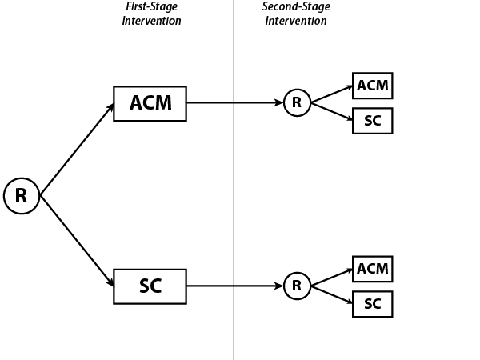

<!-- Modal -->
<div class="modal hide fade" id="exampleDmodal" tabindex="-1" data-width="760" aria-hidden="true">
<!--   <div class="modal-dialog"> -->
  <div class="modal-content">
    <div class="modal-header">
        <button type="button" class="close" data-dismiss="modal"><span aria-hidden="true">&times;</span></button>
        <h4 class="modal-title" id="exampleDmodalLabel">Example of SMART using Design D</h4>
    </div>
    <div class="modal-body">
		<p>
			We consider a <a href="http://methodology.psu.edu/ra/smart/projects/petry">SMART design</a> for attendance-based prize contingency management for cocaine abuse (N.M. Petry, P.I.). 
			Contingency management is a treatment used in substance abuse in which participants are rewarded for adhering to treatment.
		</p>
		<h4>Motivation</h4>
		Contingency management has been shown to reduce drug use. However, there remain questions regarding optimal strength of reinforcement, as well as the timing and length of CM.
		<h4>Trial Components</h4>
			There are two treatments under study:
			<ol>
				<li> Attendance contingency management (ACM), in which patients are rewarded based on their attendance (or non-attendance) at treatment sessions
				<li> Standard care (SC).
			</ol>
			After 6 weeks of treatment, all participants are re-randomized between ACM and SC. There is no tailoring variable influencing randomization.
			This results in a subset of patients who received varying lengths of ACM, as well as different sequences of ACM and SC. 
		<div>
			 </img>
		</div>
		<h4>Embedded <em>Non</em>-Adaptive Intervention Paths</h4>
			Notice that, in the absence of a tailoring variable, there are zero embedded adaptive interventions. However, there are four embedded <em>non</em>-adaptive interventions. They are
			<ol>
				<li> "Give ACM for the duration of the study."
				<li> "Give ACM for 6 weeks, then switch to SC."
				<li> "Give SC for 6 weeks, then switch to ACM."
				<li> "Give SC for the duration of the study."
			</ol>
		<h4>Outcome Measures</h4>
			The primary outcome was length of abstinence from cocaine use. 
		<h4>References</h4>
			<ol>
				<li> Petry, N. M., Barry, D., Alessi, S. M., Rounsaville, B. J., & Carroll, K. M. (2012), "A randomized trial adapting contingency
					management targets based on initial abstinence status of cocaine-dependent patients", <em>Journal of Consulting and Clinical 
					Psychology</em>, 80(2), 276-285. PMCID: PMC3668312
			</ol>
	  </div>
      <div class="modal-footer">
<!-- 		<a type="button" class="btn btn-primary" href="www/pdf/exampleDesignD.pdf" target="_blank">Print</a>
 -->        <button type="button" class="btn btn-default" data-dismiss="modal">Close</button>
      </div>
    </div>
<!--   </div> -->
</div>
<!-- /.modal -->